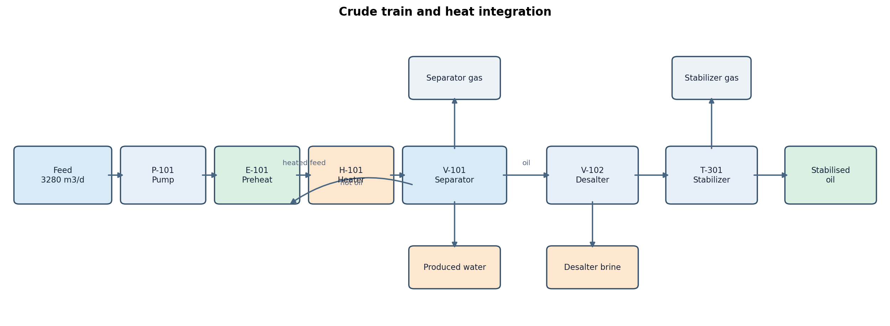
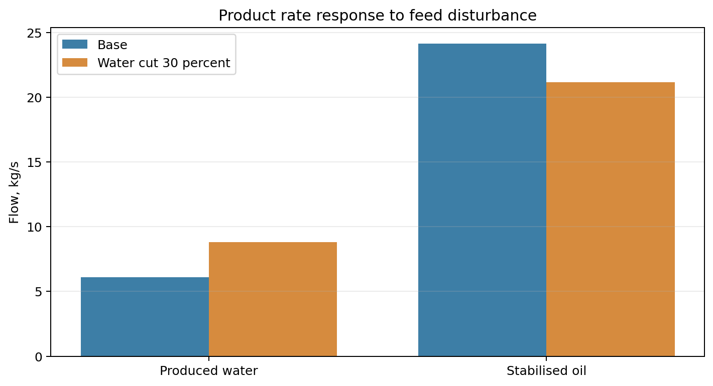
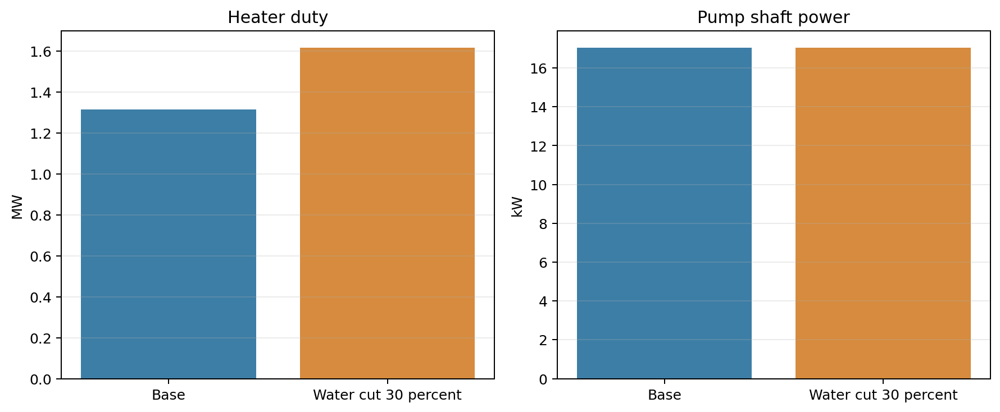

Feed rate
3280
m3/d
Separator temperature
60 C
Mass balance error
2.1e-16
Energy balance error
1.2e-16
Heater duty
1.313
MW, base case



| Case | Mass error | Energy error | Heater duty, MW | Pump shaft, kW | Separator water, kg/s | Stabilised oil, kg/s | Converged |
|---|---|---|---|---|---|---|---|
| Base | 2.13e-16 | 1.24e-16 | 1.313 | 17.0 | 5.590 | 24.159 | yes |
| Feed water cut 30 percent | 0.00e+00 | -4.36e-16 | 1.615 | 17.0 | 8.384 | 21.161 | yes |
The separator, desalter, and stabilizer use fixed split factors. They are not equilibrium flash models. Water cut and gas rate are stated assumptions; only feed rate and liquid density come from published sources.